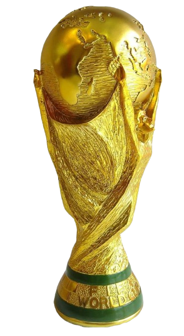
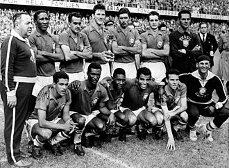
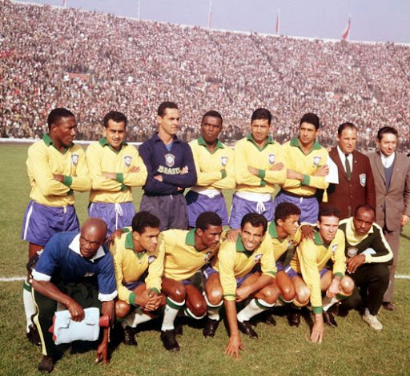
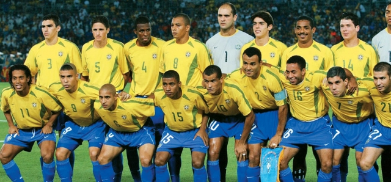

Passado Brasileiro
O Brasil é uma nação apaixonada pelo futebol, um esporte que se tornou parte de sua identidade cultural e uniu gerações em torno de um mesmo sonho. Ao longo da história, a Seleção Brasileira conquistou cinco títulos da Copa do Mundo, nos anos de 1958, 1962, 1970, 1994 e 2002, tornando-se a única seleção pentacampeã mundial. Essas conquistas representam muito mais do que vitórias em campo: elas simbolizam dedicação, trabalho em equipe, superação e orgulho nacional. Grandes jogadores como Pelé, Romário, Ronaldo Nazário e Cafu ajudaram a construir esse legado, inspirando milhões de pessoas dentro e fora do país. A trajetória do Brasil nas Copas do Mundo mostra que talento, disciplina e perseverança podem transformar desafios em conquistas inesquecíveis, servindo de exemplo para todos aqueles que acreditam em seus objetivos.

Seleção de 1958
A Seleção Brasileira de 1958 conquistou a primeira Copa do Mundo da história do Brasil, em um torneio realizado na Suécia. Com um futebol criativo, ofensivo e eficiente, a equipe encantou o mundo e venceu a final por 5 a 2 contra os suecos. A competição também revelou o jovem Pelé, que, aos 17 anos, demonstrou um talento extraordinário. Essa conquista representou um momento de grande orgulho nacional e deu início à trajetória que transformaria o Brasil na maior potência do futebol mundial.

Seleção de 1962
Na Copa do Mundo realizada no Chile, o Brasil conquistou seu segundo título mundial. Mesmo com a lesão de Pelé durante a competição, a seleção demonstrou grande força coletiva e contou com atuações brilhantes de Garrincha. A conquista do bicampeonato confirmou o Brasil como uma das maiores potências do futebol mundial.

Seleção de 1970
A Copa do Mundo de 1970, realizada no México, ficou marcada como uma das maiores exibições de futebol da história. Com craques como Pelé, Jairzinho e Carlos Alberto Torres, a seleção conquistou o tricampeonato e encantou torcedores de todo o mundo com seu talento e criatividade.

Seleção de 1994
Após 24 anos sem vencer uma Copa do Mundo, o Brasil voltou ao topo na competição disputada nos Estados Unidos. Liderada por Romário, a equipe mostrou equilíbrio, organização e determinação, conquistando o tetracampeonato após uma emocionante decisão por pênaltis.

Seleção de 2002
Na Copa do Mundo realizada na Coreia do Sul e no Japão, o Brasil conquistou seu quinto título mundial. Com destaque para Ronaldo Nazário, que foi o artilheiro do torneio, a seleção realizou uma campanha impecável e garantiu o histórico pentacampeonato, consolidando ainda mais sua tradição no futebol mundial.